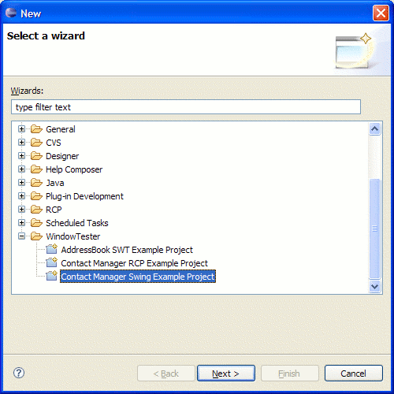
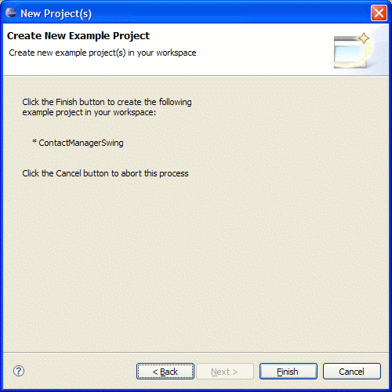
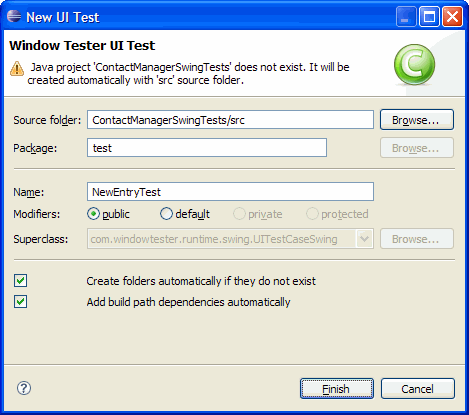
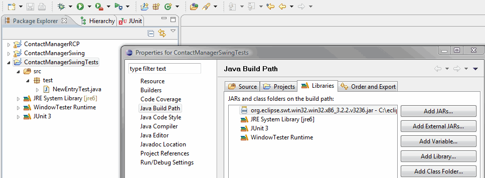
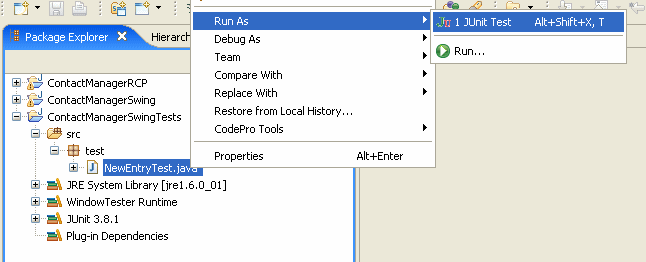

Record and Playback a Sample Swing Test
WindowTester Pro Swing records and playback UI tests for Swing
applications. Follow these steps to record and playback a UI test for
Swing applications:
Prerequisite: This tutorial requires either RCP Developer
v2.7.0 and above or WindowTester Pro 2.2.0 and above.
- Create
the ContactManager Swing project.
- Setup
a recording configuration and record user interactions.
- Stop
recording and save recorded test.
- Update
build path - Applies to the Mac OS only.
- Play
back the recorded test.
- Slower playback (optional).
- Select File >
Import from the main menu.

- From the list of wizards, select WindowTester Pro
> Contact Manager Swing Example Project. Please note, this wizard is only
available in WindowTester Pro v2.2.0 and above.
- Click Next.

- Click Finish. The ContactManagerSwing example project
is now created in your workspace.
Look for a tool item (  ) that looks
like the run arrow with a little console under it (should be next to
external tools);
) that looks
like the run arrow with a little console under it (should be next to
external tools);
- From its pull-down menu select "Record
Configurations...".


- Select Java
Application from the list on the left navigation.
- Click the New (
 )
icon.
)
icon.
- Name the launch configuration ContactManagerSwing
- Click the Browse...
button and select ContactManagerSwing
as the project
- Click the Search...
button and select contactmanager.ContactManagerSwing for the Main
Class
- Click the Apply button.
- Click the Record button. This will run the Contact
Manager Swing application in recording mode and opens the recording control shown below.


- To start recording, click on the record button (red ball) in the
recorder. Perform user interactions like adding a new contact.In
the Contact Manager application, select File > New
Contact.
To stop the recording simply exit from the application by
choosing the File > Exit menu item.
The Recorder disappears and a New UI Test dialog opens.

- Enter ContactManagerSwingTests/src as the Source
folder. We
recommend that tests be placed into a project separate from the code
under test.
- Create folder
automatically if they do not exist - If the Source folder does not
exist and this option is checked, it will automatically create the
test project with the src and bin folders. If your project structure does not
have a separate src and bin folders, uncheck this option and make
sure your test project exists.
- Enter test as the Package name.
- Enter NewEntryTest as the test name.
- Click Finish to generate this test.
Notes: This is only necessary if you're using Mac OS X.
If you're using Windows and you get a java.lang.NoClassDefFoundError: org/eclipse/swt/SWT during playback, you need to install the latest WindowTester Pro build to fix this problem.

- Right click on the newly created java project and select Properties.
- Under on Java Build Path, select the Libraries tab.
- Click Add External Libraries... and select the
org.eclipse.swt.*.jar jar file from your Eclipse directory.
Swing UI tests must be
run as JUnit tests.

- Right click on the newly recorded test class, NewEntryTest.java.
- Select "Run As > JUnit Test"
- The recorded test is played back. You should now see the
Contact Manager Swing application with the user interactions that you
recorded.
You can slow down the playback by enabling the playback delay
preference.
Note: If you encounter something like the following, please see the
corresponding FAQ entries for possible solutions:
java.lang.SecurityException: class
"junit.extensions.TestDecorator"'s...
Why is the recorder not
visible when I try to record?
java.lang.NoClassDefFoundError: org/eclipse/swt/SWT
Related Topic:
Adding Assertions (Optional)
Assertions can be generated at recording time using the assertion inspector tool. The assertion inspector is activated by clicking the inspector tool item on the recording controller.
See the Assertion Inspector documentation.